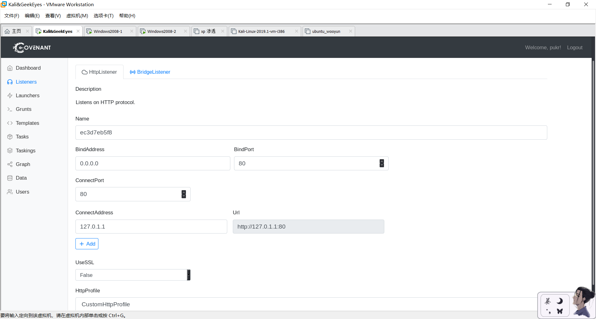

Covenant是一个.NET命令和控制框架，旨在突出.NET的攻击面，使进攻性.NET贸易工具的使用更加轻松，并充当红队成员的协作命令和控制平台。
Covenant是一个ASP.NET Core跨平台应用程序，其中包括基于Web的界面，该界面允许多用户协作。
0x00 安装
这个安装由于我的一时脑残，花了很多时间，该踩的坑都踩了一个遍。
项目主页：[https://github.com/cobbr/Covenant]
下载
注意下载地址！1
git clone --recurse-submodules https://github.com/cobbr/Covenant
否则在后期启动的时候会报错：1
2
3
4root@kali:~/桌面/root/etc/Covenant/Covenant# dotnet run
Error: git submodules have not been initialized
Covenant's submodules can be cloned with: git clone --recurse-submodules https://github.com/cobbr/Covenant
Or initialized after cloning with: git submodule update --init --recursive
形如这样的报错需要按照要求执行：1
git submodule update --init --recursive
然后进行dotnet的配置。我们还需要下载一个编译环境，确保安装dotnet核心版本2.2 SDK！Covenant尚不支持dotnet core 3.0，SDK是构建项目所必需的（不仅仅是运行时）。
首先下载：1
wget https://download.visualstudio.microsoft.com/download/pr/022d9abf-35f0-4fd5-8d1c-86056df76e89/477f1ebb70f314054129a9f51e9ec8ec/dotnet-sdk-2.2.207-linux-x64.tar.gz
或者下载地址：1
https://dotnet.microsoft.com/download/dotnet-core/thank-you/sdk-2.2.207-linux-x64-binaries
在dotnet-sdk-2.2.207-linux-x64.tar.gz的安装目录下执行配置语句：1
2
3mkdir -p $HOME/dotnet && tar zxf dotnet-sdk-2.2.207-linux-x64.tar.gz -C $HOME/dotnet
export DOTNET_ROOT=$HOME/dotnet
export PATH=$PATH:$HOME/dotnet
然后执行dotnet -h看是否配置成功。
注意，由于没有配置进环境变量，所以每次在新的终端用到dotnet命令的时候都需要执行：1
2export DOTNET_ROOT=$HOME/dotnet
export PATH=$PATH:$HOME/dotnet
这里其实微软官网提醒过我们了。但由于没看懂英语也没带脑子，我配置的时候并不知道这一点。我查了很久很久1
bash: dotnet 未找到命令。
的原因。当然你可以选择一劳永逸，设置环境变量。
接下来进行Covenant的启动。
进入Covenant/Covenant目录。1
2
3export DOTNET_ROOT=$HOME/dotnet
export PATH=$PATH:$HOME/dotnet
dotnet build
执行dotnet build的时候，有可能会出现大片的报错。我又查了很久很久，没有收获。然后发现多次执行这条语句他就成功了。。。这是玄学问题吗。

然后启动。1
dotnet run
这里会显示一个网址
本地访问。我在访问的时候，火狐浏览器说这是未配置签名的网站，这时点高级->允许例外，添加上这个网址的例外，再进行访问。
然后就到了注册页面。
使用
注册用户名和密码，你就成了管理员。其他用户的加入需要管理员来添加。
各个模块的作用。
1
2
3
4
5
6
7
8
9
10Dashboard #主页面。你可以很快地看到你得到的活跃的Grunts，当前活跃的监听器，以及一些最近分配给Grunts的任务。
Listeners #提供用于管理监听器和监听器配置文件的界面。
Launchers #提供用于创建，托管和下载启动器的界面，以用于启动新的Grunts。
Grunts #显示一个表格，以查看所有活动和不活动的Grunts，以及与Grunts进行交互并为其分配新任务。
Templates #植入模板 可自定义很多payload模板
Tasks #任务内置Mimikatz等很多模块执行多种任务，也可自行定制
Taskings #显示一个表格，以查看分配给Grunts的所有任务。
Graph #提供图形视图以可视化监听器，Grunts和对等图形。
Data #提供有关在操作过程中从Grunts 收集的数据的视图，例如凭据，指示器和下载的文件。
Users #提供用于用户管理和创建的界面。
Dashboard 仪表盘

Listeners 监听器
和CS、msf一样，在这里选择监听端口之类的。Covenant提供两种监听器，一种是HTTP，一种是TCP。当前，Covenant支持的唯一内置本机侦听器是HttpListener。
点Creat进入配置。

1 | Name #监听器名称 |
这里生成一个默认HTTP监听器。使用HTTP协议同C2 server进行通信。执行后反弹连接至C2 server。
tcp监听器和HTTP监听器设置过程没有什么区别。
GruntSMB
使用命名管道，不直接同C2 server进行通信，而是在各个Grunts之间进行通信。执行后在本机创建命名管道，可通过其他的Grunt进行远程连接。
这里多了一个配置参数1
SMBPipeName
使用示例：
GruntSMB为内网使用，可通过其他的Grunt进行激活，激活方式：
Grunt:
Launchers 启动器
有九种启动方式。
Binary 二进制文件
这是当前唯一不依赖系统二进制文件的启动器。
默认操作即可。
选择监听器，然后选择通信模板，官方提供了三个，如果监听器选择的是走http的，那么模板也选择HTTP的，如果是TCP的那么就选GruntBridge的，模板选择不同下面选项的配置也有所不同，但是也就是多了个SSL证书的选项是否打开，一般来说看个人需求，没啥需求默认就好了。
1 |
|
.net版本为4.0，要和目标主机一致。
先点击generate再下载，或者托管到自己的网址，点击Host并输入网址。
还可以查看源码，点击code。
而且火绒、360均未查杀。查杀率为38/72.
powershell
PowerShell启动器用于生成PowerShell代码和/或使用powershell.exe启动Grunt的PowerShell单行代码。
将.NET程序集保存在数组，通过Assembly.Load()在内存进行加载
代码示例：
和Binary的配置差不多，点击generate会生成powershell单行代码。分为加密和未加密两个版本。生成好之后点击host输入文件名（例如a.ps1）

会自动跳转到生成页面，现在我们的url和路径就会自动加载了。打开目标机powershell执行上线。
MSbuild
MSBuild启动器用于生成MSBuild XML文件，该文件使用msbuild.exe启动Grunt。
生成操作都类似。然后generate并下载。
在C:\Windows\Microsoft.NET\Framework\v4.0.30319目录下执行1
MSBuild.exe GruntStager.xml

将.NET程序集保存在数组，通过Assembly.Load()在内存进行加载。
代码示例：1
System.Reflection.Assembly.Load(oms.ToArray()).EntryPoint.Invoke(0, new object[] { new string[]{ } });
火绒、360均未报毒。virustotal查杀率6/59。
InstallUtil
InstallUtil启动器用于生成InstallUtil dll文件，该文件使用installutil.exe启动Grunt。
生成操作都类似。然后generate并下载。
生成了dll文件，可通过C:\Windows\Microsoft.NET\Framework\v4.0.30319目录下的InstallUtil.exe执行1
InstallUtil.exe /logfile= /LogToConsole=false /U GruntStager.dll


火绒、360均未报毒。virustotal查杀率9/71。
Please keep in mind that any of the launchers that rely on DotNetToJScript may not work on some of the latest versions of Windows 10 and Windows Server 2016 and/or may be signatured by some AMSI providers.
任何依赖DotNetToJScript的启动器可能无法在Windows 10和Windows Server 2016的某些最新版本上运行，并且/或者可能由某些AMSI提供程序签名。
从这里开始我再也没有成功过。
Wmic
Wmic启动器用于生成xsl文件和/或wmic单行程序，后者使用依赖于DotNetToJScript的wmic.exe启动Grunt。
Covenant在此处提示这个方法也许无法在Windows 10和Windows Server 2016下使用。
将.NET程序集保存在数组，通过DotNetToJScript的方法在内存进行加载。
代码示例：1
var o = delegate.DynamicInvoke(array.ToArray()).CreateInstance('Grunt.GruntStager');
参考文章：利用wmic调用xsl文件的分析与利用
Regsvr32
Regsvr32启动器用于生成SCT文件和/或regsvr32单行程序，后者使用依赖于DotNetToJScript的regsvr32.exe启动Grunt。
Covenant在此处提示这个方法也许无法在Windows 10和Windows Server 2016下使用。
将.NET程序集保存在数组，通过DotNetToJScript的方法在内存进行加载。
奇怪我在win2008和xp上都没有成功。

mshta
Covenant在此处提示这个方法也许无法在Windows 10和Windows Server 2016下使用。
将.NET程序集保存在数组，通过DotNetToJScript的方法在内存进行加载。
cscript
cscript file.js
这里借助了DotNetToJScript，其他内容同上。
wscript
wscript file.js
这里借助了DotNetToJScript，其他内容同上。
Grunts
上线主机列表。
info 记录上线主机信息
interact 与上线主机进行交互。Covenant内置了多种命令和工具都可以在此处与主机进行交互（详情见Tasks）
task Grunt支持的功能，给上线主机下发任务，内置了多个开源工具
tasking 正在进行的任务
这里怎么发挥就是另一篇文章了。关于后渗透测试、内网等。
Templates
在Templates里会显示现已有的Grunt通讯模板，可以进行添加修改。
Tasks
已有的任务，如mimikatz，portscan等，还有描述，可以谷歌翻译一下。
可以进行插件的添加。
Taskings
所有主机任务情况。
Graph
图形化界面显示上线主机和监听器间的关系。
Data
显示凭证、指标、下载、截图等
Credentials为已经在目标主机里获取到的账号密码、Hash、票据信息
Indicators为目标指标、网络指标、文件指标
Downloads为已从目标主机上下载的文件
Screenshost为已截取的目标主机桌面图
User
在User里可以添加和管理Covenant账户